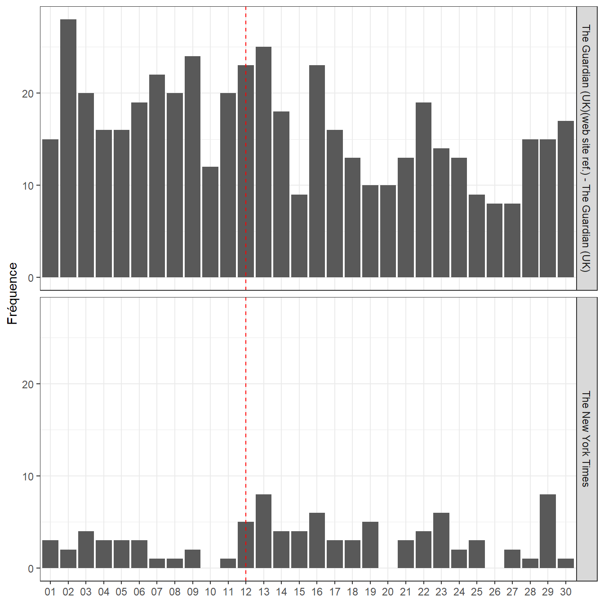

Chapitre 3 Constitution du corpus
Objectifs du chapitre : ** explorer différente techniques de collectes de données : exploitation de bases textuelles, méthodes de scrapping, APIS, extraction de document pdf, extration de texte dans des images, et une perspective oral avec les techniques de speech2 tex.**
La constitution d’un corpus est la première étape d’un projet NLP. Il se définit d’abord par la constitution d’une collection de textes dont la provenance est la nature peut être diverse. Dans ce chapitre on va examiner plusieurs techniques de collecte, et on conclue avec quelques réflexions que la questions de la constitution de l’échantillon.
- L’exploitation de bases textuelles
- Les méthodes de scrapping
- Le recours aux APIs
- La collection de document pas que textuels
- Les sources orales
et on conclue avec quelques réflexions que la questions de la constitution de l’échantillon.
3.1 L’exploitation de base de données textuelles
On commence par un exemple simple en utilisant la base europresse. l’objectif est de constituer un fichier de références bibliographiques, exploitable via r.
Dans europresse , nous avons fait une recherche sur les articles comprenant le terme " vaccination" dans la presse nationale françaises, constituées de 14 titres. On retient les 150 derniers articles au 16 Juillet 2021.
On utilise revtools pour sa fonction d’importation des fichier *.RIS et de transformation en data frame,
label | type | title | author | abstract | journal | pages | year | language | url | DA | OP |
By.Cecilia.Kang_2021_TheNewYorTim | NEWS | Facebook Says Biden Is Scapegoating Over Vaccine Falsehoods | By Cecilia Kang | The social network and the Biden administration have engaged in an increasingly rancorous war of words over the issue of vaccine misinformation. WASHINGTON -- Facebook and the Biden administration engaged in an ... | The New York Times | B 3 | 2021 | English | https://nouveau.europresse.com/Link/PARIS10T_1/news%c2%b720210719%c2%b7NY%c2%b7721611 | 19/07/2021 | 19/07/2021 |
By.Matt.Stevens_2021_TheNewYorTim | NEWS | Rules for Audiences Can Spin Heads | By Matt Stevens | Vaccination and mask requirements vary by venue. It's a weird pandemic summer for the performing arts. During its preview performances in June, New York Classical Theater was allowed to put ... | The New York Times | C 1 | 2021 | English | https://nouveau.europresse.com/Link/PARIS10T_1/news%c2%b720210719%c2%b7NY%c2%b7456420 | 19/07/2021 | 19/07/2021 |
By.Lisa.Lerer_2021_TheNewYorTim | NEWS | The Republican Path From Warp Speed Praise To Vaccine Opposition | By Lisa Lerer | ... 'll try to answer it. Have a comment? We're all ears. Email us at <occ.email> onpolitics@nytimes.com</occ.email> or message me on Twitter at @llerer . By the numbers: $15 billion ... That's roughly the ... | The New York Times | A 17 | 2021 | English | https://nouveau.europresse.com/Link/PARIS10T_1/news%c2%b720210719%c2%b7NY%c2%b7715549 | 19/07/2021 | 19/07/2021 |
df<-df%>%
mutate(jour=substring(DA,1,2))
g22<-ggplot(df, aes(x=jour))+
geom_bar()+labs(x=NULL,y="Fréquence")+
geom_vline(xintercept=12, linetype="dashed", color = "red")+
facet_grid(vars(journal))
g22
revtools n’est pas fait que pour importer des données au format bibliographique .ris, ou au format .bib, et de les transformer un tableau observations - variables ( bref, un dateframe). Il a des fonctions de visualisations rapides fort efficace. La plus spectaculaire est un outil de visualisation qui s’appuie sur deux modèles de détections de topics (ce sujet sera l’objet du chapitre 8), paramétrables de manière interactive en quelques minutes, et conçu avec shiny, le package star des graphes interactifs.
C’est un super outils pour avoir un premier coup d’oeil sur les données, un plug in super pratique.
On l’applique sur nos données. L’allure de l’interface est la suivante.
screen_topic
L’interface n’étant pas programmatique, on exporte quelques images en jpeg (un bouton dans l’interface permet de faire celà sans effort) et on les récupère avec cowplot, le package qui permet d’assembler des graphes et que nous utiliserons systématiquement dans ce cours.
p1 <- ggdraw() + draw_image("./images/topic_espace.png")
p2 <- ggdraw() + draw_image("./images/topic_topic.png")
p3 <- ggdraw() + draw_image("./images/topic1.png")
p4 <- ggdraw() + draw_image("./images/topic5.png")
plot_grid(p1, p2 , ncol=2)Et pour illustrer les graphiques des termes les plus proches du topic 1 et du topic 5. L’un est relatif à l’actualité austrlienne, l’autre à l’actualité anglaise.
La méthode est sympa, rapide, sur le pouce, mais pas suffisante pour aller audelà et noatmment comparer les lignes éditoriales des deux titres que nous avons choisis. A ce stade de l’analyse c’est déjà beaucoup.
3.2 Jouer avec les bases bibliographiques
Fulltext
3.3 Scrapping
Le scrapping correspond à un internet sauvage où la collecte d’information se traduit par une technique de chasseurs-cueilleurs, le glanage. c’est l’activité qui consiste à moissonner les informations disponibles sur le net en simulant et en automatisant la lecture par un navigateur ( on préfère l’expression des quebecois : des butinuers).
Elle consiste à construire un robot capable de lire et d’enregistrer les informations disponibles sous forme html puis à les distribuer (parsing) dans des tableaux structurés, selon une stratégie d’exploration du web préalablement définie. En réalité le scrapping pose deux problèmes :
- celui de la structure de recherche. C’est le problème que relève les spiders, des robots qui recherchent dans les pages des liens, et vont de proche en proche, de lien en lien, pour explorer un domaine.Ils peuvent être plus systématique et prendre avantage de l’organisation d’un site web pour enummérer les pages.
- celui de la collecte de l’information sur chacune des pages. Il s’appuie sur le principe que le langage html est un langage à balise où le contenu et le contenant sont clairement séparés. Par exemple, dans le corps de texte d’une page on définira un titre par la balise
dont l’instruction s’achève par la balise
. On sépare ainsi clairement le contenu de la forme.
Un titre de niveau 1 (un gros titre)
<p>Un paragraphe.</p>
<h2>Un titre de niveau 2 (un sous titre)</h2>
<p>Un paragraphe.</p>
<h3>Un titre de niveau 3 (un sous-sous titre)</h3>
<p>Etc.</p>`
Ultérieurement on pourra définirs les propriété graphiques d’une balise par des CSS. par exemple avec ceci les paragraphes seront publiés en caractère bleu.
p{ color: blue; }
Ce qui nous intéresse n’est pas la décoration, mais le fait que les développeurs définissent des balises spécifiques pour chacun des éléments de leurs page web, et que si nous savons les repérer , nous avons le moyen de mieux lire le texte. Les balises sont la cible du scrapping
3.3.1 rvest avec r
De nombreuses ressources sont disponibles, mais pour en rester à r , le package rvest permet de réaliser des extractions simples mais suffisantes pour de nombreux usages.
une application rvest
https://www.r-bloggers.com/2018/10/first-release-and-update-dates-of-r-packages-statistics/
le package rvest est générique
https://community.rstudio.com/t/scraping-messages-in-forum-using-rvest/27846/2
library(rvest)
# Scrape thread titles, thread links, authors and number of views
start <- "https://uberzone.fr/threads/si-la-vaccination-devient-obligatoire-vous-feriez-vous-vacciner-ou-changeriez-vous-de-corps-de-metier.17425"
x<-c("/page-2", "/page-3", "/page-4")
for (val in x){
url<-paste0(start,val)
h <- read_html(url)
post <- h %>%
html_nodes(".bbWrapper") %>%
html_text()%>%
str_replace_all(pattern = "\t|\r|\n", replacement = "")
post
#authors <- h %>%
# html_nodes(".username--style2 ") %>%
# html_text() %>%
# str_replace_all(pattern = "\t|\r|\n", replacement = "")
# Create master dataset (and scrape messages in each thread in process)
master_data <-
tibble(post)
rds_name<-paste0("./data/df_",substr(val,2,6),".rds")
saveRDS(master_data,rds_name)
}
head(master_data)## # A tibble: 6 x 1
## post
## <chr>
## 1 "Je comprends pas pourquoi persistez-vous à vouloir convaincre alors que vous~
## 2 "Shibani a dit:Je comprends pas pourquoi persistez-vous à vouloir convaincre ~
## 3 "*****\"Celui qui ne pète pas et ne rote pas explose\"*****"
## 4 "mez a dit:Ta cirrhose et ton Cancer du poumon (je te les souhaite pas faut ~
## 5 "Shibani a dit:Et puis sache que comme je l’ai déjà dit tu peux acheter ton p~
## 6 "*****\"Celui qui ne pète pas et ne rote pas explose\"*****"3.3.2 Des problèmes pratiques, juridiques et éthiques
La pratique du scrapping se heurte d’abord à une question technique. ce n’est pas un excercice facile, et il doit être confier à des spécialistes. Il se heurte aussi à différents problèmes d’ordre éthique et juridique. Si la pratique n’est pas interdite en tant que telle, elle se confronte à différents droits et principes éthiques
En termes pratiques, le scrapping crée des risques pour les sites :
- Le risque de deny of service, c’est à dire de saturer ou de parasiter un système et de s’exposer à ses contre-mesures.
- Il contribue à la complexification du web, et implique une consommation excessive de ressources energétiques.
Et des risques pour la qualité dU recueil de données
- Le risque d’information parcellaires, tronquées, inexactes qui résultent de ces contre-mesures. Les producteurs développent des stratégies moins naives. L’exemple des pages numérotée par ordre de production auxquels on substitue un nombre au hasard pour annihilier l’information temporelle.
- le risque matériel de mal lire les informations, pour des raison d’encodage approximatifs.
En termes de droits même les conditions légales relèvent de différents droits :
- De la propriété intellectuelle,
- Du respect de la vie privée,
- Du droit de la concurrence qui sans l’interdire, condamne la copie laissant espérer qu’une transformation des données fasse qu’il y échappeR.
Cependant des facilités et tolérances sont souvent accordées quand c’est dans un objectif de recherche et que des précautions minimales d’anonymisation ou de pseudonymisation sont prises, et que les règles de conservation et de destruction des données sont précisées.
En termes éthiques
- Un principe éthique essentiel dans la recherche, et ailleurs, et de ne pas nuire à la soci2té dans son ensemble, hors cette technique participe à la “robotisation” du web (plus de 50% du trafic résulterait de la circulation des spi.ders , scrapers, sniffers et autres bots, comme dans la forêt une éthique écologique revient à préveler le minimal nécessaire pour l’étude entreprise
3.4 les API
Les API doivent être considérées comme la voie normale d’accès à l’information, du moins en droit. Elles relèvent du contrat. Le recours aux APIs est civilisé, ne serait-ce parce qu’on introduit une sorte d’étiquette, des règles de courtoisie, un système de reconnaissance réciproque et d’attribution de droits.
Sur le plan méthodologique elles présentent d’avantage de donner aux requêtes un caractère reproductible , mêmes si les bases visées peuvent varier. Elles asurent une grande fiabilité des données.
L’utilisation d’API lève l’ambiguïté légale qui accompagne le scraping et peut ainsi paraître comme plus “civilisée”. Elle nécessite naturellement que le gestionnaire de la base de données fournisse les moyens de s’identifier et de requêter, elle peut avoir l’inconvénient d’être coûteuse quand l’accès est payant, ce qui sera de plus en plus le cas.
3.4.1 Un tour d’horizon des API
La plus part des grandes plateformes offrent des API plus ou moins ouvertes, examinons-en quelques une pour comprendre plus clairement leur intérêt méthodologique. On va se concentrer sur trois exemples : le firehose de tweeter, l’api de google maps, la Crunchbase.
Twitter n’est pas qu’un réseau social, c’est une gigantesque base de données qui enregistre les engagements et les humeurs de 500 millions d’humains à travers la planète et les centres d’intérêt. Elle permet potentiellement de saisir les opinions à différentes échelles géeographique et temporelle, y compris les plus locales et les plus courtes. Elle a le défaut de souffrir fortement de biais de sélection, le premier étant le biais d’engagement. Les passionnés d’un sujets parlent plus que les autres, une parôle mieux contrôlée.
Le cas de Google maps est passionnant à plus d’un égard. le premier d’entre eux est que dans l’effort d’indicer chaque objet de la planête, la base de données devient un référentiel universel, plus qu’une représentation intéressée du monde. Quand l’utilisateur communs cherche un chemin optimal, l’analyste de donnée trouve un socle pour ordonner le monde.
La Crunchbase construite par le média Techcrunch repertorie les créations de start-up et les levées de fonds qu’elles ont obtenues. Elle recence les dirigeants, les acquisitions, décrit les business model.
intégrité des bases de données, universalité des élément, interopérabilité, disponibilité
Les problèmes posés :
- justesse , précision et représentativité. leur constitution n’est pas aléatoire, leurs couverture reste partielle.
- accessibilité, la privatisation du commun. Si pour le chercheur les APIS sont sur un plan de principe une merveille sur un plan plus social elle instaure des inégalités d’accès énormes aux données qui permettent de valoriser la connaissance. Ce mécanisme opère via deux canaux. Le premier est celui de la tarification qui ségrège les chercheurs en fonctions des ressources dont ils disposent. Le second passe par la couverture du champs, les données les plus précises et les plus denses se trouvent dans les régions les plus riches.
- des catégorisations peu délibérées
3.4.2 un point de vue plus technique
3.4.3 Un exemple avec Rtweet
https://cran.r-project.org/web/packages/rtweet/vignettes/intro.html
Plusieurs packages de r permettent d’interroger le firehose ( la bouche d’incendie!) de twitter.
https://www.rdocumentation.org/packages/rtweet/versions/0.7.0
L’authentification ne nécesssite par de clé API, il suffit d’avoir son compte twitter ouvert. Cependant la fonction lookup_coords requiert d’avoir une clé d’api ou google cloud map. Elle permet de selectionner sur un critère géographique.
https://developer.twitter.com/en/docs/tutorials/getting-started-with-r-and-v2-of-the-twitter-api
#une boucle pour multiplier les hashtag
x<-c("#getaround","#Uber", "#heetch")
for (val in x) {
tweets <- search_tweets(val,n=20000,retryonratelimit = TRUE)%>% #geocode = lookup_coords("france")
mutate(search=val)
write_rds(tweets,paste0("tweets_",substring(val,2),".rds"))
}
df_blablacar<-readRDS("./data/tweets_blablacar.rds")
df_uber<-readRDS("./data/tweets_uber.rds")
df_heetch<-readRDS("./data/tweets_heetch.rds")
df<-rbind(df_blablacar,df_uber )
ls(df_blablacar)
foo<-df %>% select(account_lang, geo_coords,country_code, country, account_lang,place_name)On laisse le lecteur explorer les différentes fonctionnalités du package. On aime cependant celle-ci qui sample le flux courrant au taux annoncé de 1%. Voici l’extraction de ce qui se dit en france pendant 10 mn (600s). La procédure peut donner une sorte de benchmark auquel on peut comparer une recherche plus spécifique.
3.5 La gestion des documents
voir aussi
https://cran.r-project.org/web/packages/fulltext/fulltext.pdf
3.5.1 Extraire du texte des pdf
Le package pdftools est parfaitement adapté à la tâche. Des fonctions simples extraient différents éléments du pdf : * les information relative au document pdf lui-même * La liste des polices employées * Les attachements * La table des matières ( si elle a été encodée) * et naturellement le texte dans un ordre de droite à gauche et de ligne à ligne, reconnaissant cependant les retrour chariot, et sauts de lignes.
Chaque page est contenue dans une ligne.
## $version
## [1] "1.4"
##
## $pages
## [1] 12
##
## $encrypted
## [1] FALSE
##
## $linearized
## [1] TRUE
##
## $keys
## $keys$Author
## [1] ""
##
## $keys$Creator
## [1] ""
##
## $keys$Keywords
## [1] ""
##
## $keys$Producer
## [1] "TCPDF 6.2.12 (http://www.tcpdf.org)"
##
## $keys$Subject
## [1] ""
##
## $keys$Title
## [1] "Le néolibéralisme et l\220art de gouverner"
##
## $keys$Trapped
## [1] ""
##
##
## $created
## [1] "2021-05-04 17:33:26 CEST"
##
## $modified
## [1] "2021-07-02 14:10:59 CEST"
##
## $metadata
## [1] "<?xpacket begin=\"\" id=\"W5M0MpCehiHzreSzNTczkc9d\"?>\n<x:xmpmeta xmlns:x=\"adobe:ns:meta/\" x:xmptk=\"Adobe XMP Core 5.6-c017 91.164464, 2020/06/15-10:20:05 \">\n <rdf:RDF xmlns:rdf=\"http://www.w3.org/1999/02/22-rdf-syntax-ns#\">\n <rdf:Description rdf:about=\"\"\n xmlns:dc=\"http://purl.org/dc/elements/1.1/\"\n xmlns:xmp=\"http://ns.adobe.com/xap/1.0/\"\n xmlns:pdf=\"http://ns.adobe.com/pdf/1.3/\"\n xmlns:xmpMM=\"http://ns.adobe.com/xap/1.0/mm/\"\n xmlns:pdfaExtension=\"http://www.aiim.org/pdfa/ns/extension/\"\n xmlns:pdfaSchema=\"http://www.aiim.org/pdfa/ns/schema#\"\n xmlns:pdfaProperty=\"http://www.aiim.org/pdfa/ns/property#\">\n <dc:format>application/pdf</dc:format>\n <dc:title>\n <rdf:Alt>\n <rdf:li xml:lang=\"x-default\">Le néolibéralisme et lâ<U+0080><U+0099>art de gouverner</rdf:li>\n </rdf:Alt>\n </dc:title>\n <dc:creator>\n <rdf:Seq>\n <rdf:li/>\n </rdf:Seq>\n </dc:creator>\n <dc:description>\n <rdf:Alt>\n <rdf:li xml:lang=\"x-default\"/>\n </rdf:Alt>\n </dc:description>\n <dc:subject>\n <rdf:Bag>\n <rdf:li/>\n </rdf:Bag>\n </dc:subject>\n <xmp:CreateDate>2021-05-04T17:33:26+02:00</xmp:CreateDate>\n <xmp:CreatorTool/>\n <xmp:ModifyDate>2021-07-02T14:10:59+02:00</xmp:ModifyDate>\n <xmp:MetadataDate>2021-07-02T14:10:59+02:00</xmp:MetadataDate>\n <pdf:Keywords/>\n <pdf:Producer>TCPDF 6.2.12 (http://www.tcpdf.org)</pdf:Producer>\n <xmpMM:DocumentID>uuid:95265141-0cc7-e3b8-5dff-27561dd19960</xmpMM:DocumentID>\n <xmpMM:InstanceID>uuid:71358868-c7aa-4ef5-8b30-f18fa6312a88</xmpMM:InstanceID>\n <pdfaExtension:schemas>\n <rdf:Bag>\n <rdf:li rdf:parseType=\"Resource\">\n <pdfaSchema:namespaceURI>http://ns.adobe.com/pdf/1.3/</pdfaSchema:namespaceURI>\n <pdfaSchema:prefix>pdf</pdfaSchema:prefix>\n <pdfaSchema:schema>Adobe PDF Schema</pdfaSchema:schema>\n </rdf:li>\n <rdf:li rdf:parseType=\"Resource\">\n <pdfaSchema:namespaceURI>http://ns.adobe.com/xap/1.0/mm/</pdfaSchema:namespaceURI>\n <pdfaSchema:prefix>xmpMM</pdfaSchema:prefix>\n <pdfaSchema:schema>XMP Media Management Schema</pdfaSchema:schema>\n <pdfaSchema:property>\n <rdf:Seq>\n <rdf:li rdf:parseType=\"Resource\">\n <pdfaProperty:category>internal</pdfaProperty:category>\n <pdfaProperty:description>UUID based identifier for specific incarnation of a document</pdfaProperty:description>\n <pdfaProperty:name>InstanceID</pdfaProperty:name>\n <pdfaProperty:valueType>URI</pdfaProperty:valueType>\n </rdf:li>\n </rdf:Seq>\n </pdfaSchema:property>\n </rdf:li>\n <rdf:li rdf:parseType=\"Resource\">\n <pdfaSchema:namespaceURI>http://www.aiim.org/pdfa/ns/id/</pdfaSchema:namespaceURI>\n <pdfaSchema:prefix>pdfaid</pdfaSchema:prefix>\n <pdfaSchema:schema>PDF/A ID Schema</pdfaSchema:schema>\n <pdfaSchema:property>\n <rdf:Seq>\n <rdf:li rdf:parseType=\"Resource\">\n <pdfaProperty:category>internal</pdfaProperty:category>\n <pdfaProperty:description>Part of PDF/A standard</pdfaProperty:description>\n <pdfaProperty:name>part</pdfaProperty:name>\n <pdfaProperty:valueType>Integer</pdfaProperty:valueType>\n </rdf:li>\n <rdf:li rdf:parseType=\"Resource\">\n <pdfaProperty:category>internal</pdfaProperty:category>\n <pdfaProperty:description>Amendment of PDF/A standard</pdfaProperty:description>\n <pdfaProperty:name>amd</pdfaProperty:name>\n <pdfaProperty:valueType>Text</pdfaProperty:valueType>\n </rdf:li>\n <rdf:li rdf:parseType=\"Resource\">\n <pdfaProperty:category>internal</pdfaProperty:category>\n <pdfaProperty:description>Conformance level of PDF/A standard</pdfaProperty:description>\n <pdfaProperty:name>conformance</pdfaProperty:name>\n <pdfaProperty:valueType>Text</pdfaProperty:valueType>\n </rdf:li>\n </rdf:Seq>\n </pdfaSchema:property>\n </rdf:li>\n </rdf:Bag>\n </pdfaExtension:schemas>\n </rdf:Description>\n </rdf:RDF>\n</x:xmpmeta>\n \n \n \n \n \n \n \n \n \n \n \n \n \n \n \n \n \n \n \n \n \n<?xpacket end=\"w\"?>"
##
## $locked
## [1] FALSE
##
## $attachments
## [1] FALSE
##
## $layout
## [1] "single_page"fonts <- pdf_fonts("./pdf/2021neoliberalismegouverner_Meunier_Esprit.pdf")
files <- pdf_attachments("./pdf/2021neoliberalismegouverner_Meunier_Esprit.pdf")
toc <- pdf_toc("./pdf/2021neoliberalismegouverner_Meunier_Esprit.pdf") #il n'y a pas de table des matière dans ce texte
text <- pdf_text("./pdf/2021neoliberalismegouverner_Meunier_Esprit.pdf")
cat(text[[1]]) # pour afficher le texte de la page 1## Le néolibéralisme
## et l’art de gouverner
## À propos de Naissance de la biopolitique
## de Michel Foucault
## François Meunier
##
##
##
##
## O n dit parfois du métier de l’historien qu’il consiste avant tout
## à découper en périodes, à indiquer les ruptures dans le temps
## historique, à montrer les changements d’environnement et
## de paradigme. C’est à ce travail que se consacre Michel Foucault dans
## son célèbre cours de 1978-1979 au Collège de France connu sous le
## nom de Naissance de la biopolitique 1. Il devait porter initialement sur la
## « biopolitique », un mot chatoyant recouvrant les pratiques politiques
## contemporaines autour du vivant (santé, démographie, sexualité, etc.).
## Mais Foucault voulait montrer d’abord à quel point la venue du libé-
## ralisme avait modifié en profondeur les pratiques gouvernementales.
## Première rupture, celle advenue à la fin du xviiie siècle avec le libéralisme
## économique classique, selon lequel le marché devient l’instance clé dans
## l’art de gouverner, donnant à l’action publique un lieu de légitimation en
## même temps que des limites. Seconde rupture, celle qui sépare libéralisme
## et néolibéralisme, que Foucault situe dans l’après-guerre en Allemagne,
## avec ce qu’on appelle « l’ordolibéralisme ».
##
##
## Équivocité du néolibéralisme
## Reprenant, quelque quarante ans après, le fil de ce cours, nous remettons
## ici en cause le découpage historique. D’abord, il nous semble que ce
##
## 1 - Michel Foucault, Naissance de la biopolitique. Cours au Collège de France (1978-1979), Paris,
## EHESS/Seuil/Gallimard, 2004.
##
##
##
##
## · ESPRIT · Mai 2021 83/Il va falloir traiter ce texte en analysant précisément sa composition. Et en définissant une séquence d’opérations logiques qui permette un premier nettoyage du texte. Dans l’exemple on va de plus essayer de respecter la structure en paragraphe du texte.
- Suprimer haut et bas de pages
- Supprimer les sauts de ligne
- Identifier les sauts de paragraphe
- Enlever les notes de bas de page
- Corriger l’hyphénation ()
- regrouper les document en un seul bloc de texte
- le splitter en autant de paragraphes.
On va utiliser des fonctions de traitement de chaines de caractère avec Stringret le recours à l’art ( ici simple) des regex auxquels on consacre un développement dans le chapitres X.
## [1] "Le néolibéralisme\net l’art de gouverner\nÀ propos de Naissance de la biopolitique\nde Michel Foucault\nFrançois Meunier\n\n\n\n\nO n dit parfois du métier de l’historien qu’il consiste avant tout\n à découper en périodes, à indiquer les ruptures dans le temps\n historique, à montrer les changements d’environnement et\nde paradigme. C’est à ce travail que se consacre Michel Foucault dans\nson célèbre cours de 1978-1979 au Collège de France connu sous le\nnom de Naissance de la biopolitique 1. Il devait porter initialement sur la\n« biopolitique », un mot chatoyant recouvrant les pratiques politiques\ncontemporaines autour du vivant (santé, démographie, sexualité, etc.).\nMais Foucault voulait montrer d’abord à quel point la venue du libé-\nralisme avait modifié en profondeur les pratiques gouvernementales.\nPremière rupture, celle advenue à la fin du xviiie siècle avec le libéralisme\néconomique classique, selon lequel le marché devient l’instance clé dans\nl’art de gouverner, donnant à l’action publique un lieu de légitimation en\nmême temps que des limites. Seconde rupture, celle qui sépare libéralisme\net néolibéralisme, que Foucault situe dans l’après-guerre en Allemagne,\navec ce qu’on appelle « l’ordolibéralisme ».\n\n\nÉquivocité du néolibéralisme\nReprenant, quelque quarante ans après, le fil de ce cours, nous remettons\nici en cause le découpage historique. D’abord, il nous semble que ce\n\n1 - Michel Foucault, Naissance de la biopolitique. Cours au Collège de France (1978-1979), Paris,\nEHESS/Seuil/Gallimard, 2004.\n\n\n\n\n· ESPRIT · Mai 2021 83/\n"t_reg<-str_replace(tex$text,"[\\s+].*Meunier[\n]+", " ") # entete droite
## on selectionne tout bloc de texte qui commence par un nombre indéterminée de blanc qui s'achève par n'importe quel caractère répétés mais terimé par la séquence Meunier suivie de sauts de ligne.
t_reg<-str_replace(t_reg,"[\\s+].*gouverner[\n]+", " ") # entete gauche
t_reg<-str_replace_all(t_reg,"[\\s+].*2021[\n]", " ") # bas de page gauche
t_reg<-str_replace_all(t_reg,"ESPRIT.*[\n]", " ") # bas de page droit
#on marque les paragraphes avec la chaine XXX pour les splitter dans un second temps
t_reg<-str_replace_all(t_reg,"\n\n\n", "XXX")
# On supprime les saut de ligne en les remplaçant par un espace
t_reg<-str_replace_all(t_reg,"[\n]", " ")
#on enlève les notes de bas de page
t_reg<-str_replace_all(t_reg,"\\d\\s[\\-].*XXX", "XXX")
#on regroupe les pages
t<-paste(unlist(t(t_reg)), collapse=" ")
#on enlève les notes dans le texte
t<-str_replace_all(t,"[A-Z|a-z]+\\d\\s[\\-]", " ")
t<-str_replace_all(t,"\\d\\d\\s[\\-]", " ")
#hyphenation
t<-str_replace_all(t,"[A-Z|a-z]+[\\-]\\s", "")
#pour enlever les espaces excedentaires
t<-str_squish(t)
t## [1] "Le néolibéralisme À propos de Naissance de la biopolitique de Michel Foucault O n dit parfois du métier de l’historien qu’il consiste avant tout à découper en périodes, à indiquer les ruptures dans le temps historique, à montrer les changements d’environnement et de paradigme. C’est à ce travail que se consacre Michel Foucault dans son célèbre cours de 1978-1979 au Collège de France connu sous le nom de Naissance de la biopolitique 1. Il devait porter initialement sur la « biopolitique », un mot chatoyant recouvrant les pratiques politiques contemporaines autour du vivant (santé, démographie, sexualité, etc.). Mais Foucault voulait montrer d’abord à quel point la venue du libé- ralisme avait modifié en profondeur les pratiques gouvernementales. Première rupture, celle advenue à la fin du xviiie siècle avec le libéralisme économique classique, selon lequel le marché devient l’instance clé dans l’art de gouverner, donnant à l’action publique un lieu de légitimation en même temps que des limites. Seconde rupture, celle qui sépare libéralisme et néolibéralisme, que Foucault situe dans l’après-guerre en Allemagne, avec ce qu’on appelle « l’ordolibéralisme ».XXXÉquivocité du néolibéralisme Reprenant, quelque quarante ans après, le fil de ce cours, nous remettons ici en cause le découpage historique. D’abord, il nous semble que ce XXX · n’est pas autour de la notion de marché qu’il faut attacher la genèse du libéralisme classique, mais plutôt autour de l’idée d’une société capable de s’organiser en dehors du prince. Ensuite, la rupture constituante du néolibéralisme se situe postérieurement à l’arrivée de Reagan et Thatcher au pouvoir, lorsqu’on aura théorisé et mis en pratique la financiarisation de l’économie comme instance ordonnatrice (cela donc après le cours de Foucault). S’agissant de l’ordolibéralisme, il présente de fortes continuités avec le libéralisme classique, même s’il garde les marques d’un mer- cantilisme qui s’est développé tardivement en Allemagne. Il n’est guère étonnant que ce courant se soit fondu si aisément dans le modèle social de marché auquel on associe davantage la social-démocratie allemande que le libéralisme débridé. Cela devrait aider à mieux caractériser ce qu’il faut entendre par « néo- libéralisme », un mot devenu équivoque. Si l’on peut créditer Foucault d’être parmi ceux qui l’ont inventé, c’est plus chez lui par commodité verbale2. Lorsqu’il rédigea le résumé du cours au terme de son année, c’est significativement le seul mot de « libéralisme » qu’il a retenu. Le cours bénéficie toujours d’une forte aura. En effet, il est la seule incursion de Foucault dans l’histoire contemporaine ; il introduit le concept de gouvernementalité, qui a acquis une certaine place dans la science politique. Son style attire, mélange d’écrit et d’oral où la pensée se construit par bonds successifs et inattendus, avançant « en écrevisse » comme il le dit. Le texte déroute aussi parce qu’il ne cherche pas à construire un contre-modèle quand il analyse le courant intellectuel libéral. La dissection des textes s’accompagne à l’évidence chez lui d’une certaine fascination. Il rabroue même son public quand celui-ci voudrait le voir glisser vers des objections trop faciles au libéralisme3. Il n’est pas étonnant que des milieux se réclamant du libéralisme, y compris poli- tique, s’en réclament presque autant que ses adversaires.XXX XXX Enfin et surtout, le texte se concentre pour l’essentiel sur l’Allemagne, un pays que Foucault connaissait très bien pour y avoir enseigné : « Dans cette seconde moitié du xxe siècle, le libéralisme est un mot qui nous vient d’Allemagne. » C’est l’ordolibéralisme qu’il désigne comme « néolibéral ». Il traite assez peu, de façon surprenante, de ce qu’on appelle l’École de Chicago, que Foucault appelle l’anarcho-libéralisme, née dans les années 1930, dont l’influence a été majeure dans le renversement idéologique opéré à l’époque de Reagan aux États-Unis : « Je ne suis pas sûr d’avoir le temps de parler des Américains. »XXXL’âge classique L’économie politique, à partir de Turgot et Smith, s’est bâtie sur une critique du régime mercantiliste. Le mercantilisme, c’est l’idéologie d’un État en constitution, qui organise l’hégémonie du prince, qui pour cela capte des richesses, s’organise administrativement, privilégie la bonne collecte des impôts et l’exportation, et où un ordre juridique se substitue au droit divin du souverain. Cette critique avait commencé sur le plan des idées politiques. Chez Locke et Spinoza, le citoyen naissait et la liberté politique était réclamée. Mais on ne touchait pas encore à l’organisation sociale du royaume. Le pas en avant fait par l’économie politique a été de donner toute sa place à la nouvelle classe des marchands, consciente désormais de contribuer à l’enrichissement du royaume. On quittait une vision assez prédatrice, où l’échange était essentiellement un jeu à somme nulle, où ce que gagnait un pays était une perte pour l’autre et où le talent du prince consistait à ce que son pays se sorte bien de cette confrontation. La vision classique est inverse : il y a possibilité d’un échange équitable, qui se fait fina- lement au bénéfice – « à l’intérêt » – des deux parties4. Il y a possibilité d’une croissance endogène où le marchand réinvestit son profit dans des activités nouvelles, une morale que le puritain anglais avait parfaitement intériorisée. Il s’introduit à plein la notion de concurrence qui gomme les situations de rente. Naissait dans la foulée la notion d’intérêt général et de bien commun, davantage au centre des intérêts individuels dans la XXX · tradition britannique que l’expression d’une souveraineté première dans la tradition française. Foucault décrit cette transition mais force le trait quand il indique, dans une phrase significative, que cet âge classique est celui où le marché devient un principe de régulation politique en remplacement de l’ordre juridique qui prévalait auparavant. Selon lui, c’est désormais la légi- timité marchande qui non seulement limite mais organise et structure la décision publique. Elle devient le « lieu de véridiction » de l’action gou- vernementale : « Ce lieu de formation de la vérité […], il faut le laisser jouer avec le moins d’interventions possibles pour qu’il puisse et formuler sa vérité et la proposer comme règle et norme à la pratique gouvernementale. Ce lieu de vérité, c’est bien entendu non pas la tête des économistes, mais le marché 5. » Mais Foucault anticipe de près de deux siècles. D’une part, la prévalence du droit est plus manifeste encore à l’époque classique qu’à âge préclassique ; les structures de marché s’approfondissent et s’appuient sur des contrats établis, le mot étant d’ailleurs repris dans la notion de contrat social qui naît à cette période. D’autre part, il n’y a pas pour les classiques une rupture dans la conception du marché. Les prix auraient été avant cette période, dit Foucault, des prix ordonnés selon des critères d’équité ou de stabilité sociale, des prix « justes » et non, comme postérieurement, des prix régis par la loi de l’offre et la demande. C’est ce que dément une bonne part de l’historiographie moderne, à partir d’auteurs comme de Roover ou Todeschini6, pour qui le juste prix n’était rien d’autre que le prix de marché, mais d’un marché mis en position de bien fonctionner, une idée qui fera apparaître progressivement le concept de concurrence, très net chez les auteurs de la seconde scolastique dans l’Espagne de la fin du xvie siècle, celui de monopole étant déjà ancien. La rupture, majeure, avec le mercantilisme existe, mais elle est que la société peut se libérer du prince, que l’économie peut fonctionner malgré sa dispersion, sans coordination venue d’en haut. La fameuse « main invisible », dans le seul passage de La Richesse des nations où Smith la mentionne, y est comme une image pour résoudre ce paradoxe d’une XXX économie qui évite le chaos alors que les centres de décision (de pouvoir) sont dispersés, chacun d’eux ne prenant nullement en compte la décision des autres. Il s’agit là d’une notion commune qui exprime la différence entre la cause finale d’une action et l’intention des agents7. Sur ce point, nos économistes restent même en retrait du libéralisme politique d’un Locke ou d’un Montesquieu pour qui la société fonctionne non pas malgré sa dispersion mais grâce à une dispersion des pouvoirs et des centres de décision, qui devient l’élément régulateur par lequel on atteint le bien commun. Dans ce contexte, le gouvernement prend une place très différente. La société connaît des contraintes et interactions multiples et l’art de gou- verner consiste à les prendre en compte. Il s’introduit une rationalité différente, une rationalité des fins, que Foucault décrit très bien. La question posée est celle de l’utilité ou de l’efficacité des effets induits d’une mesure. Mais ce qui est important Ce qui est important et moins et moins bien vu par Foucault est que bien vu par Foucault est que cette rationalité nouvelle peut justifier cette rationalité nouvelle peut autant l’intervention publique que son justifier autant l’intervention retrait. On pourra soutenir dans un cas publique que son retrait. que l’autonomie de la société signifie que le gouvernement est en trop, qu’il perturbe l’ordre économique ou qu’il interfère de façon coercitive sur la liberté individuelle. Mais on peut alternativement affirmer que le gouvernement a en main des guides et préceptes, une rationalité économique, qui l’autorisent et qui même le poussent à intervenir dans l’ordre économique. On voit poindre ici une bifurcation profonde, toujours actuelle, qui verra tout à la fois un Hayek libertarien ou un Keynes interventionniste se réclamer de la tradition économique libérale. À vrai dire, pour ce second courant libéral, on peut corriger la phrase de Foucault citée plus haut : autant que dans le marché, le lieu de vérité est dans la tête des économistes. Ils affichent déjà leur prétention en venant XXX · comme des ingénieurs sociaux, comme les Locke et Montesquieu l’ont été en matière d’institutions politiques, devisant le bon mécanisme ou le bon montage. On le voit déjà chez Quesnay, un physiocrate qui précède Smith, dans ses réflexions sur ce que doit être un « bon impôt », c’est-à-dire un impôt efficace, dans le sens de l’intérêt bien compris du royaume. Turgot le sera plus encore. Et au siècle suivant, des économistes comme Cournot ou Bertrand introduiront l’idée d’un calcul économique aux fins d’une utilité sociale maximale, et cela dans des domaines comme la décision de construire un pont, où le marché est absent et n’a rien à dire.XXX L’ordolibéralisme en Allemagne C’est un sujet d’étonnement, mal couvert par les historiens, que le libé- ralisme ait eu une place si réduite dans la riche tradition intellectuelle allemande, Kant faisant bien sûr une immense exception. Remontant hardiment dans le temps, l’une des explications peut tenir au luthéria- nisme dans sa version allemande, qui a été tout autant une école d’indi- vidualisme face au divin que de soumission face au pouvoir temporel, un terrain peu propice à l’élaboration d’un pacte collectif donnant sa légitimité au pouvoir, comme dans la tradition anglaise ou française. Un autre facteur déterminant tient au retard allemand à construire son État national. Il l’a fait tout du long du xviiie siècle (s’agissant de la Prusse) et du xixe siècle sous la houlette prussienne, avec un vif ressen- timent vis-à-vis des autres États européens déjà fortement constitués, et particulièrement de la Grande-Bretagne qui imposait son libéralisme à coups de libre-échange. Le romantisme, au début de ce siècle, en a été le pendant culturel, avec une forte dimension nationaliste, contredisant l’idéal libéral des Lumières. Le Zollverein (une union douanière entre États allemands mise sur pied dans les années 1830) exprimait bien le vœu des élites libérales à l’ouest de l’Allemagne, mais était dans la réalité un projet d’essence protectionniste actionné par la Prusse et théorisé par Friedrich List comme l’affirmation d’une souveraineté propre. Il a échoué en tant que projet politique. Au fond, l’Allemagne a connu son moment mercantiliste, mais avec un siècle et demi de retard. Ce sont les notions de richesse de l’État, de levées d’impôt, de contrôle de la monnaie, de commerce extérieurXXX devenu l’enjeu d’âpres batailles avec les pays voisins qui prévalaient. Un épisode intellectuel intéressant, qui allait préfigurer les tenants de l’libéralisme et les distinguer des libéraux tant classiques qu’états-uniens, a été celui des « sciences camérales ». Il s’agissait d’écoles administratives mises en place par le roi de Prusse pour former le personnel capable d’assurer la puissance du souverain, non par des moyens militaires (cela allait venir plus tard), mais par une gestion réglée du pays, par voie de « police », selon le mot retenu à l’époque et commenté longuement par Foucault. Cette tradition s’est poursuivie à l’époque de Bismarck puis sous Weimar avec ce grand pré-keynésien qu’a été Rathenau. Les penseurs de l’ordolibéralisme ont tout à la fois bousculé cette tradition et en ont subi l’influence. Les deux grands noms sont Wilhelm Röpke et Walter Eucken, suivis par Ludwig Erhard, futur chancelier, qui a donné au mouvement sa consistance politique. Ils ont bâti toute l’ossature idéologique du Parti chrétien-démocrate allemand, sous le terme d’« éco- nomie sociale de marché », un terme que le SPD allait adopter lui aussi, soucieux, devant la popularité de la notion, de ne pas être durablement exclu du pouvoir. L’ordolibéralisme se caractérise d’abord par un rejet de l’intervention directe de l’État dans le jeu de l’économie : ni rôle stabilisateur, ni rôle redistributeur. Second principe, proche du premier, le gouvernant doit écouter ce que dit le système des prix, c’est-à-dire l’information qu’apporte le fonctionnement d’un marché concurrentiel. Mais il s’agit ici d’un choix presque autant forcé qu’idéologique. Tony Judt, dans son his- toire de l’après-guerre8, signale cet épisode déterminant qu’a été le début de la guerre froide. Les États-Unis ont imposé à la Grande-Bretagne et à la France de se réarmer. Mais bien sûr pas à l’Allemagne. Or celle-ci gardait largement intact son appareil industriel de guerre, qui s’est mis naturellement à tourner pour nourrir le reste des pays européens en produits venus de la mécanique ou de la chimie. Le modèle extraverti propre à l’Allemagne était lancé, une voie qu’ont trouvée plus tard le Japon et les autres pays asiatiques. S’appuyer sur la logique du marché international devenait alors l’élément clé d’une stratégie imposée par l’environnement autant que par la doctrine. Notons le contraste avec la XXX · France : trente ans après, au moment où Foucault faisait son cours, il y avait encore des prix administrés. Mais écouter le système des prix suppose que le marché fonctionne bien, qu’il repose sur un socle approprié : une fixité de la monnaie d’une part, et surtout une action délibérée de l’État pour imposer le principe de concurrence. Le marché n’est pas un ordre transcendant que toute initiative de l’État irait perturber ; il y a au contraire l’idée qu’il est fragile, qu’il y a une pente naturelle vers la formation de monopoles et de col- lusions, qu’il ne fonctionne pas naturellement sans un cadre très rigide que précisément l’État apporte9. Pour préserver la concurrence, il faut d’ailleurs encourager les entreprises familiales (le Mittelstand dont on sait aujourd’hui le succès économique), l’artisanat et une agriculture formée de petites exploitations. On n’est pas surpris alors du compromis trouvé entre la France et l’Allemagne au moment du traité de Rome : un pivot venu de Paris, à savoir la politique agricole commune qu’acceptaient de plus ou moins bon gré nos ordolibéraux, et, venue de Bonn, une solide autorité de la concurrence, avec un soutien plus mitigé de Paris. Ainsi, l’État intervient en amont, sur la structure plutôt que sur ses effets. Il pose la « règle », un mot toujours très fort pour les Allemands. La structure, ce sera davantage l’entreprise que le consommateur, ce sera davantage le droit que les dispositifs économiques et fiscaux. Par cohérence, l’ordolibéralisme avait une vue très restrictive de ce que devait être l’État social, bien loin du projet bismarckien. Cela en raison du primat donné aux prix et à l’entreprise. Une santé, une éducation et une culture socialisées ou gratuites, c’était intervenir à rebours puisqu’on niait l’apport du système de prix dans l’allocation des ressources. La protection sociale était pour eux l’affaire des individus. Si l’on devait aider, c’était uni- quement par le jeu des revenus, en préservant les mécanismes de marché. Cela n’a bien sûr pas résisté aux contraintes politiques du moment, sous l’influence notamment du SPD, de la tradition bismarckienne et des milieux catholiques, si l’on se rappelle l’influence qu’avait eue longuement le premier parti social-chrétien d’Europe, le Zentrum, né en 1870. Mais, à elle seule, la concurrence ne saurait suffire. Röpke, cité par Foucault, le disait avec force : « Ne demandons pas à la concurrence plus qu’elle XXX ne peut donner. Elle est un principe d’ordre et de direction dans le domaine particulier de l’économie de marché et de la division du travail, mais non un principe sur lequel il serait possible d’ériger la société tout entière. Moralement et sociologiquement, elle est un principe dangereux, plutôt dissolvant qu’unifiant. Si la concurrence ne doit pas agir comme un explosif social ni dégénérer en même temps, elle présuppose un encadrement d’autant plus fort, en dehors de l’économie, un cadre politique et moral d’autant plus solide 10. » Foucault use de litote quand il interprète cette phrase comme une « ambiguïté » du libéralisme à l’allemande. On voit ici la différence avec l’autre versant, disons keynésien ou acti- viste, dans la bifurcation libérale mentionnée plus haut. Le camp activiste voyait le rôle de l’État en creux en quelque sorte, dans les défaillances du marché qu’il fallait compenser, n’hésitant pas à se substituer à lui s’il le fallait. L’ordolibéralisme insistait au contraire pour une action de l’État en amont, consistant à créer les conditions par lequel le marché continuerait à jouer pleinement son rôle, pour éviter les interventions en aval. Ce débat persiste pleinement aujourd’hui. Le libéralisme des écono- mistes américains, pour y venir, était plus extrême : c’est parce qu’il y a inévitablement des défaillances de l’État qu’il faut y substituer le marché.XXXL’École de Chicago Foucault ne traite que cursivement des représentants de l’école améri- caine du libéralisme économique, dont Frank Knight, Henry Simons, George Stigler et, plus tard, Milton Friedman. Ces économistes allaient transposer dans l’ordre social, en le poussant à l’extrême, une autre tradition économique libérale, née dans les années 1870, appelée néo- classique ou marginaliste. Dans un marché bien réglé, selon ce courant, les prix, le taux d’intérêt ou les salaires s’imposent de façon transcendante aux entreprises et aux ménages. Ceux-ci sont immergés dans un monde dont les paramètres leur échappent. Ils reçoivent des informations externes et y répondent, méca- niquement, en ajustant leur comportement. La règle du profit maximum n’est qu’une règle de survie de l’entreprise. L’individu est représenté via un modèle très sommaire, l’homo œconomicus, égoïste et optimisateur, dont on ne trouve pas la moindre trace chez les pionniers du libéralisme 1XXX · économique, pas plus que chez les fondateurs de l’ordolibéralisme ou d’ailleurs chez Hayek. Le système des prix est comme le système nerveux, celui qui transmet les informations aux agents, qui les motive et les stimule. Chez ces libéraux américains, toute perturbation à son endroit est a priori néfaste. Par exemple, une organisation en syndicats ou un salaire minimum, parce qu’ils sortent du marché « libre », se retournent finalement contre les travailleurs (et les plus modestes, pour faire bonne mesure) en créant du chômage. On voit la différence avec Adam Smith, qui recommande que les travailleurs s’unissent dans la négociation sala- riale face à des patrons qui ont toute facilité, vu leur faible nombre, d’organiser la collusion entre eux11 ; de même qu’avec l’ordolibéralisme allemand qui, dès 1951, promulguait les premières lois d’après-guerre sur la codétermination et les comités d’entreprise12. Les agents étant emmaillotés dans un tissu complexe d’incitations exo- gènes, leur autonomie est extraordinairement réduite. Foucault disait de l’âge classique que « le nouvel art gouvernemental consomme de la liberté ». Ici, il n’y a plus une once de liberté. L’individu est comme une molécule réa- gissant, selon des lois d’optimisation, aux impulsions externes fournies par le marché. L’économiste devient celui qui dit : « Incitations ! » La gouvernementalité par le marché est radicale et l’analyse de Foucault commence ici à prendre son sens : « L’ homo œconomicus, c’est celui qui est éminemment gouvernable. » Les règles de marché deviennent les étalons d’une bonne action publique ; elles en donnent les codes. Foucault introduit ici une distinction entre ce qu’il appelle le sujet de droit et le sujet d’intérêt : le sujet d’intérêt répond à des incitations venues de l’extérieur et renvoie rationnellement sa réponse ; le sujet de droit est mû par des motivations intrinsèques13. Par exemple, un interdit légal, assorti d’une sanction ou d’une peine, est un interdit pour le sujet de droit, mais un coût pour le sujet d’intérêt. Le délinquant chez Gary Becker, un économiste de Chicago, calculera les avantages et les coûts de son acte (dont l’amende ou la prison) et prendra sa décision en conséquence (et en cela n’est pas délinquant, ou alors nous le sommes tous).XXX 1XXX On retrouvera toutefois au sein de cette école américaine la bifurcation décrite plus haut entre libertariens et activistes. On n’abandonnera pas forcément l’ingénierie sociale chère à l’économiste, mais imbriquée dans l’ordre du marché : s’il y a, par exemple, une discrimination par l’argent dans l’accès à l’éducation, on distribuera des coupons pour permettre aux gens de tous les milieux de se présenter à l’école privée de leur choix, préservant ainsi la concurrence. Friedman recommandait le revenu uni- versel de base. Un courant intéressant a aussi émergé sous la désignation de market design, à savoir comment structurer un marché afin qu’il réponde à certains objectifs de politique économique ou sociale, un marché censé donc être asservi à la cause gouvernementale, à faire délibérément partie de sa panoplie d’instruments14. La relation État-marché est à deux voies. Si d’ailleurs les individus sont soumis aux incitations et qu’un Léviathan apprend à bien les manier, tout lui devient possible. Un pas sera franchi quelque dix ans après le cours de Foucault : celui de la montée en régime d’un nouvel « espace de véridiction », le marché financier. Le voici qui, mieux que le marché des biens et du travail, pourra allouer les ressources au sein de l’économie et répartir le risque, avec des frictions minimales. C’est la valorisation en continu des actifs sur les marchés financiers qui est le juge de paix, y compris dans l’allocation de capital aux entreprises, y compris, prétend-on, dans la gestion des entreprises. S’il faut caractériser en quelques mots ce qu’est le néolibéralisme dans le champ économique, on dira qu’il est l’addition du primat donné aux messages des prix, de la mise en retrait de l’État, de la plus grande fluidité donnée aux marchés financiers et de l’instrument-marché pour remédier aux défaillances que le marché peut entraîner et que l’action de l’État entraîne à coup sûr. On est très loin alors du libéralisme classique, très loin aussi de sa variante allemande d’après-guerre, lesquels nous donnent, à n’en pas douter, de meilleures pistes pour affronter les défis de l’éco- nomie globale de demain.XXX 1XXX · Powered by TCPDF (www.tcpdf.org)"Plus les textes sont standardisés et plus simple est le processus d’importation des pdf. Si l’on souhaite aller plus loin on recommande par exemple https://ropensci.org/blog/2018/12/14/pdftools-20/ pour extraire un tableau. ( à développer en 4 ou 5 lignes avec des références)
3.5.2 la numérisation et l’OCR
D’immenses archives sont numérisées, ce qui signifie qu’on en a prise une image. L’information est contenu dans les pixels, et l’enjeu est de reconnaitre parmis eux des formes caractéristiques : alphabet, ponctuation à travers de multiples variations. Les plus fortes sont celles manuscrites, mais l’écriture typographique est aussi très variables dans ses formes. C’est un enjeu industriel anciens. La reconnaissance optique des caractère a cependant fait d’immense progrès et atteint des niveau de performance élevé.
Le traitement des adresses a sans doute été le problème principal qui a stimulé les technologies de l’OCR. La qualité du matériaux est essentiel, et s’assurer que les expéditeurs choisissent un modèle conventiel et normé de rédaction de la l’adresse est une condition de leur succcès. La situation idéale ressemble à ceci.

Modèle de rédaction correcte d’une adresse postale
La réalité ressemble souvent à celà

à çà
Dans un environnement en science sociale la situation est moins complexe, les documents analysés ne seront le plus souvent pas des documents mansuscrits ( sauf pour les médiévistes), mais le scan de document plus structurés. Par exemple les jpg
Une solution pour r est tesseract. C’est un package qui permet d’accéder au programme du même nom, développé à l’origine Chez Hewlett-Packard Laboratories entre 1985 et 1994, avec quelques modifications supplémentaires apportées en 1996 pour le portage sur Windows, et sur C en 1998.Tesseract a été mis en open Source par HP En 2005. Et de 2006 à novembre 2018, Google a continué à le développer. Il s’appuie sur des réseaux neuronaux de type LSTM. C’est une petite mais puissante intelligence artificielle qui supporte plus d’une centaine de langues.
Testons-le sans attendre avec le texte suivant. Extrait du premier article du premier numéro de la revue " Etalages" Publiée en France de 1909 à 1938. L’image est un extrait du document numérisé fournit par la BNF.

Lettre de motivation
https://gabriben.github.io/NLP.html#introduction
## [1] "C:\\Users\\33623\\AppData\\Local\\tesseract4\\tesseract4\\tessdata/fra.traineddata"t1<-Sys.time()
text <- tesseract::ocr("./images/N1_avril1909b.jpeg", engine = "fra")
t2<-Sys.time()
t<- t2-t1 #pour compter le temps de calcul
cat(text) #pour afficher le texte avec sa mise en page## En fondant la ‘Revue Internationale de
## l'Etalage, nous avons cédé à une ambition
## qui. peut s'exprimer en trois mots : Faire
## œuvre ulile.
##
## Faire œuvre utile en facilitant la tâche du
## commerçant détaillant par une documen-
## tation sérieuse et raisonnée se rapportant aux
## choses de sa profession, et notamment aux
## meilleurs procédés pour attirer la clientèle.
##
## Faire œuvre utile surtout en vulgarisant
## pratiquement l’art appliqué à l'Etalage.
##
## Si notre carrière de publiciste s'honore sans
## fausse modestie d’avoir doté d’autres corpo-
## rations de revues professionnelles qui rendent
## des services, nous devons déclarer en toute.
## sincérité que la fondation d'aucune de celles- ;
## ci ne répondait à un tel besoin.
##
## Aussi est-ce d’un pied ferme que nous
## nous engageons dans le vaste champ d’ac-
## tions qui s'ouvre devant nous.
##
## L'Etalage!.. Quel sujet intéressant et
## captivant au premier chef. N'est-il pas vrai-
## ment incompréhensible qu'aucuñe plume
## autorisée n’ait jamais tenté, en France, d'en
## établir les règles, d’en vulgariser les principes.
## Et pourtant, en envisageant la chose à un
## point de vue général, ne peut-on pas dire que
## l’'Etalage est un des ornements de nos cités
## qui met sans cesse en évidence, aux yeux
## de tous, la supériorité du goût et les apti-
## tudes artistiques d’un pays ! Tandis qu’au
## point dé vue de leurs propres intérêts, nos
## lecteurs ne doivent-ils pas considérer l’Eta-
## lage comme l'aimant qui attire les affaires !
##
## On le comprend si bien aujourd’hui que le
## commerçant qui se désintéresse de son éta-
## lage est une exception appelée de plus en
## plus à disparaître.
##
## Et cependant, parmi ceux qui se rendent
## un compte exact de l’importance du rôle de
## VEtalage dans les affaires de détail, combien
## peu possèdent à fond l’art de présenter leurs
## produits sous leur meilleur jour et de la façon
## la plus favorable. È
##
## Quoi de surprenant d’ailleurs à cela. En## Time difference of 2.134335 secsPour améliorer la performance qui peut se mesurer au niveau des lettres mais doit surtout l’être au niveau des mots, deux stratégies sont possibles, la première de préprocessing, la seconde de postprocessing avec un mécanisme de détection et de correction d’erreur. Le preprocessing consiste à traiter l’image en renforçant les contrastes , en éliminant le bruit, on en rend les pixels mieux digestes pour tesseract. C’est ce à quoi s’attache le pakage magick qui offre un bouquet de fonctions à cette fin. Nous laissons le lecteur le tester seul.
Le post-processing un introduire des mécanismes de correction d’erreurs au niveau des mots.Pour une idée de ce type de développement voir Gabriel, Yadir, Xiaojie, Mingyu
Naturellement, un paramètre important est la vitesse de traitement des images. Dans un projet complet on peut être amener à traiter des centaines images en boucle. Dans notre exemple la durée est de t secondes, autrement dit 6 images à la minute ou 360 à l’heure…
3.6 Les contenus vocaux
La tradition méthodologique de la sociologie est celle de l’entretien, avec toute sorte d’acteur. Elle aboutit à la production de transcriptions, plus ou moins détaillées et précise. Mais des textes
On peut désormais enregistré des réaction par des interfaces vocales. le speech to text est de plus en plus efficace, voir l’API de google.
Il existe déja des packages sur r qui permettent d’accéder aux solutions de google langage qui necessite une clé d’API.
https://cran.r-project.org/web/packages/googleLanguageR/vignettes/setup.html
3.7 Echantillonner le texte
Un corpus reste un échantillon. Dans ce chapitre nous avons appris comment faire la cueillette dans les sources de textes et constituer matériellement un corpus. Il reste à traiter la question de la représentativité. La collecte doit rester raisonnée.
Les unités de texte. Une unité de texte : un chaine de caractère intégrée dans un document. Celui ci peut être un livre un article, une note, une transcription,
- Un document
- Un ou des auteurs du document
- Une date
- Un endroit
- Un contexte : les unités précedente, et subséquentes.
Unités de production et de reception, Un texte est produit et puis il est lu, peut-être.Analyser le texte peut se faire dans deux perspectives, celle de la production et celle de la réception. Les corpus doivent être construit en fonction de ce critère.
Examiner la question de l’engagement dans ce cadre est essentiel, certains acteurs sur un sujet donnée sont amenés à parler plus que les autres et développent un surcroit de voix. la question du biais de selection
Un corpus est un ensemble de documents. Ils peuvent être courts, les tweets, pas trop long - abstract articles court - long ( article de recherche, ou très long (livres).
La collecte peut se faire d’abord sur des matériaux primaires, numérisés sous forme d’images, et dans lesquels en analysant les pixels on peut reconnaitre un texte.
3.8 Conclusion
Dans ce chapitre nous aurons égratigné des sujets techniques de constitution de corpus en envisageant différents moyens d’acccès
- Scrapping
- API
- texte dans les images
- une ouverture à l’oral
On soulignera la technicité
On observera l’étendue des domaines à exploiter.